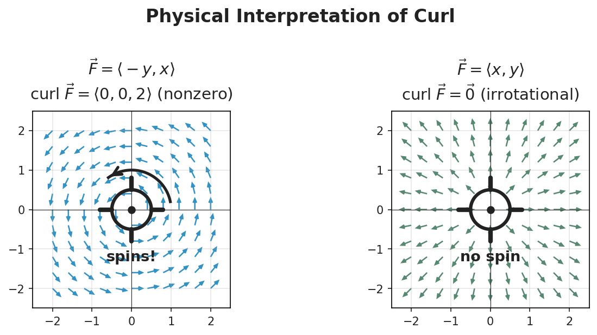
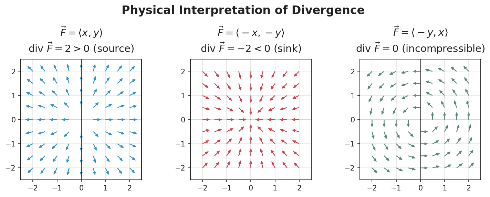

Section 16.5: Curl and Divergence
Vector Calculus
MTH 310
Calculus III
Curl: Measuring Rotation in 3D
In 16.4, the 2D curl \(Q_x - P_y\) measured local rotation. In 3D, we need a vector to capture the axis and rate of rotation.
Curl of a Vector Field
\[\text{curl}\;\vec{F} = \nabla \times \vec{F} = \begin{vmatrix} \vec{i} & \vec{j} & \vec{k} \\[4pt] \frac{\partial}{\partial x} & \frac{\partial}{\partial y} & \frac{\partial}{\partial z} \\[6pt] P & Q & R \end{vmatrix}\]
Expand by cofactors (just like a \(3\times 3\) determinant):
\[= \vec{i}\!\left(\frac{\partial R}{\partial y} - \frac{\partial Q}{\partial z}\right) - \vec{j}\!\left(\frac{\partial R}{\partial x} - \frac{\partial P}{\partial z}\right) + \vec{k}\!\left(\frac{\partial Q}{\partial x} - \frac{\partial P}{\partial y}\right)\]
Notice: the \(\vec{k}\)-component is \(Q_x - P_y\) — the 2D curl from Green's Theorem.
Example 1: Computing Curl
Example 1
Find \(\nabla \times \vec{F}\) for \(\vec{F}(x,y,z) = \langle x^2yz,\; xy^2z,\; xyz^2 \rangle\).
What Does Curl Mean Physically?

Paddle wheel test: Place a tiny paddle wheel in the flow.
- curl \(\vec{F} \neq \vec{0}\): the paddle wheel spins. Direction of curl = axis of rotation.
- curl \(\vec{F} = \vec{0}\): no spinning \(\to\) irrotational
Example: \(\vec{F} = \langle -y, x, 0 \rangle\) (rotation in \(xy\)-plane): \(\nabla \times \vec{F} = \langle 0, 0, 2 \rangle\). Curl points in \(+z\) (CCW from above), magnitude 2.
Example: \(\vec{F} = \langle yz, xz, xy \rangle\): \(\nabla \times \vec{F} = \vec{0}\). No rotation \(\to\) conservative (potential: \(f = xyz\)).
Divergence: Measuring Expansion
Divergence of a Vector Field
\[\text{div}\;\vec{F} = \nabla \cdot \vec{F} = \frac{\partial P}{\partial x} + \frac{\partial Q}{\partial y} + \frac{\partial R}{\partial z}\]
Much simpler than curl: differentiate each component with respect to its “own” variable and add.
Output types (remember dot vs cross):
- \(\nabla \cdot \vec{F}\) (dot \(\to\) scalar): divergence is a number at each point
- \(\nabla \times \vec{F}\) (cross \(\to\) vector): curl is a vector at each point
Example 2: Computing Divergence
Example 2
Find \(\nabla \cdot \vec{F}\) for \(\vec{F}(x,y,z) = \langle e^x\sin y,\; e^x\cos y,\; z^2 \rangle\).
What Does Divergence Mean Physically?

Think of \(\vec{F}\) as fluid flow:
- \(\nabla \cdot \vec{F} > 0\): source — more flows out than in (expansion)
- \(\nabla \cdot \vec{F} < 0\): sink — more flows in than out (compression)
- \(\nabla \cdot \vec{F} = 0\): incompressible — what flows in equals what flows out
Example: \(\vec{F} = \langle x, y, z \rangle\): \(\nabla \cdot \vec{F} = 3\). Constant positive divergence everywhere — uniform expansion (like an explosion).
Conservative Test in 3D and Two Key Identities
Theorem: Curl Test for Conservative Fields
On an open, simply connected region: \(\vec{F}\) is conservative \(\iff\) \(\nabla \times \vec{F} = \vec{0}\).
This generalizes \(P_y = Q_x\) to 3D — curl \(= \vec{0}\) means all three cross-partial pairs match.
Two identities (both from Clairaut's Theorem — mixed partials cancel in pairs):
\[\nabla \times (\nabla f) = \vec{0} \qquad\text{and}\qquad \nabla \cdot (\nabla \times \vec{F}) = 0\]
- “Curl of a gradient is always zero” — every conservative field is irrotational
- “Div of a curl is always zero” — useful test: if \(\nabla \cdot \vec{G} \neq 0\), then \(\vec{G}\) cannot be a curl
Example 3: Test with Curl, Then Find the Potential
Example 3
Determine whether \(\vec{F} = \langle y^2z^3,\; 2xyz^3,\; 3xy^2z^2 \rangle\) is conservative. If so, find \(f\).